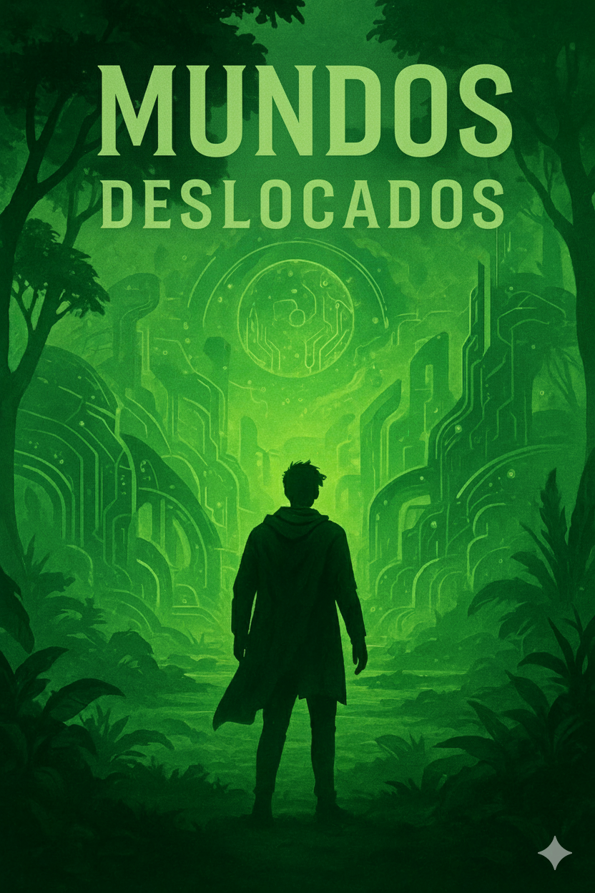

ARQUIVO RECUPERADO // REALIDADE ALTERADA
Fragmento restaurado.
PARABÉNS, A TRAVESSIA CHEGOU AO FIM.
O multiverso agora aguarda por você em novas aventuras…

BAIXAR
PARABÉNS, A TRAVESSIA CHEGOU AO FIM.
O multiverso agora aguarda por você em novas aventuras…